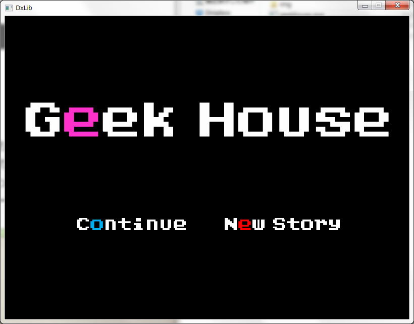

2015/5/5
TimeCard作った。地味にTwitterで欲しいなぁと呟いてたんだけど、作ってしまいました。
慣れれば使いやすいと思うけど、取っ付きにくいデザインになった。コマンドプロンプトみたいな感じ。将来的にはAndroidアプリにするかもと思ってデザインを省略したらこうなってた。ただその分、めちゃくちゃ高速。zipで3KBしかない（笑）このLogのページより少ない容量ですね。
App_leviewがめちゃ進化してる。今公開してるのは俺しか記事かけないけど、新App_leviewはWikiみたいにみんなでレビューが書けるようになってる。まだセキュリティをちゃんとしてないから公開できないけど、最低限の機能はもう完成してる。つまり誰でもWebページ作れるようになってる。Year!!!
2015/4/18
PHP使ってゲームのレビューするやつ作った。今ここからしかつながってないけど。まだちゃんとレビューも書けてない！アフィリエイトやろうと思ってたんだけど未実装。
二ヶ月くらいログ更新してなかったけど、実はちょくちょくHPは更新してた。リンク繋がってないけど。乱数の検証ページとか、とか。うーん更新してなかったかもしれない。
思ったよりPHPの環境を整えるのが簡単だった。PHPの設定ファイルとか弄らなきゃアカンかと思ってたけどなんもしなくて良かったし。これでWEBアプリも作れる下地ができましたね！！目指せアプリで一万長者！！
2015/2/21
細かい修正も終わり。次に改装するとしたら、いよいよJavaScriptかな！
マウス乗せるとメニューが「びよーん」と出てくるアレを実装したい！サブメニューをどうにかしたいんだよね。
このページの日付を選ぶ所とか今一直線に並べてるだけだしな。もっと格好良く、わかりやすくしたい。ゲームのページなんてそもそもサブメニュー置いてないしな。
あとそろそろアクセス解析をしても良いかもしれない。客足を作るのなんて簡単さ！ニッチなジャンルの記事と、流行に乗った記事を書けば良いんでしょ？
流行のジャンルは大手には勝てないからあんまり力を入れないにしても、ニッチなジャンルで記事を作っておけば少ないけどコンスタントに検索で引っかかるんじゃね？
あとkekemotoの主力はプログラムとかゲーム方面だけど、それに限らず雑多なジャンルの記事を書けば新規顧客も狙えるっしょ？
末永くコンスタントにアクセスを稼げるサイトを目指して行きたい笑。
今のところ広告を乗せる予定もないしアクセス数稼いでもあんま意味ないんだけど、ただ単純に嬉しいよねアクセス数増えると。
このままだと捕らぬ狸の皮算用
で終わっちまうからな。ハヤク結果を出してやろうと思う。……ビックマウスしてみた
2015/2/17
久しぶりの更新ですな。半年振りぐらいかな？
まぁ単純に面倒になったから更新してなかったんだけど、久しぶりにやるとやっぱ面白いな。
ずっとこの五ヶ月間リニューアル中ってぶら下げてたんだけど、ようやくリニューアル終了です。
Year!!!まだ細かい修正は残ってるけどデザインがめちゃくちゃ変わるって事はもうないと思うで。
たぶんな笑。最近はAndroidについに手だしたよ。
ずっと前から、それこそスマホをAndroidにした時からいつか開発してやるぞと思ってた事だからなぁ。
そう思うと感慨深いものがあるな。まぁ全然順調じゃないんだけど。Viewってなんやっー！！みたいな。
それとね、今現在めちゃくちゃレポートとかテストとか近くてこんなん弄ってる暇ないはずなんだけどね。
レポート9通に期末テストが明後日。うーん、このHP始めたきっかけもテストからの現実逃避だった気がするなぁ。
あのあと掲示板自作するためにPHPの勉強始めよう思って入門書とか買って来たは良いけれど、
就職がどうのこうのって話になってプログラムの方向性も絞らなきゃダメだって話になってPHPは勉強してないんよ泣。
今日っつうか昨日か。Log書いてるときっていつも徹夜明けな気がするぜ。
昨日映画「舞妓Haaaaan!!!」見てさ、面白かったものにすぐ影響されちゃう性質なもんで言葉遣いがなんかめちゃくちゃなんだよね。
日頃からエセ関西弁だけど、京言葉と花言葉も混じって偉いこっちゃ！みたいな。「なんなん？」って埼玉の方言らしいよ。テンションが限りなく深夜テンションだわ。朝なのに。
次の目標としてはAndroidアプリ売る事が目標です。ラジオもぼちぼちやってみようかな。今日久しぶりにラジオやったら結構楽しかったわ。
HPのラジオページも更新しないとあれなんだけど……とりあえずはAndroid開発、の前にレポートとテストを頑張りたいと思います。
2014/9/28
なんだかんだ報告が溜まっております。
１つ、リニューアルしました！まだ現時点では途中ですがその辺もおいおい。
２つ、javaで「みきさー」作っちゃいました！今はyoutubeからしかリンクが繋がってないのですが
３つ、「パズル」改め「Geek House」にバージョンアップしました！これはtwitterからしかリンクが……
４つ、BBSは無理だと判明しました！朝日会員しか書き込めないとか、誰得！？って話
５つ、逆にフォームは簡単に作れたので、さっそく実装してみた！
profileから見れるよ
意外とよっつめが悔しい。したらば掲示板から拝借しようか考え中。
「みきさー」は一週間企画の汚名挽回かも？主要な部分は一日で作り上げてレポートが犠牲になった
2014/9/3
第二弾、一週間でゲーム作ろうぜ企画。失敗ですわ。本当に申し訳ない。でも一体誰が期待していたというのか……
まだjavaの勉強途中という。というか勉強が終わってないのに何故この企画を始めたのか
勉強はまだマウスの入力を受け付ける処理てきな所までしか終わってません。
でも後キー入力を終えたら基礎は一通り終わると思います。
また今度頑張る。そして7/10からずっと言ってるBBSもいつか、いつの日か実現できるよう精進致します。
2014/8/28
『一週間でゲーム作ろうぜ企画、第二弾』をここに宣言致します！！
今回は初のjavaでのゲーム製作。そしてクラスを使ってプログラミングをしようと思います。
またもジャンルはパズルで、ルールはクリックしたブロックの隣り合っている同じ色のブロックが全部消えるアレです。
言葉で説明しても分かりづらいと思うので、完成を待ってね！
今回の期間は8/28〜9/4。成功にしても失敗にしても9/4にはなにかしらココに報告を載せます。
載ってなかったら自分は死んだものと思ってください！
地味にandroidの開発もスタートしました。その前にjavaやclassに慣れておこうと今回の企画を出したのですが。
前回のゲーム「パズル」があんまりにもダサいので改良しています。システム的にはだいぶ完成に近づいたのですが、素材がいかんせん集まりませぬ。
2014/8/10
やっと試験も終わって夏休みになっていると言うのに、レポートが終わらない！
何をするにしてもレポートが頭から離れず集中して遊べない！
ここ最近は「
ボルダリング」と「
俺の屍を越えてゆけ」にどハマりしちゃいまして、楽しいのなんの
俺屍の方は２もvitaで出ているのですが、自分はvitaで初代をプレイ中です。初代で充分面白い。
こういうの作ってみたいなぁとか妄想してます。プログラミングの方は先日やっとオブジェクト指向の基本を勉強しまして、javaとかandroidとかにも手を広げたいなぁと考えていますが、いつになるやら……
他にもBBS立てたり、スカイダイビングしたりと今年の夏は珍しくやる事いっぱいなのですが、まずはレポートを終わらせないと！
2014/7/18
一週間でゲーム作ろうぜ企画、達成！！！！
えっもう18日だって？違うんだよ徹夜してるから17日ってことでいいんだよ。うん。
さっそく、Game'sに作ったゲームは上げたからダウンロードしてみてね。
とは言いつつも、全然納得できるゲームには仕上がってないのだが。
たぶん、ユーザーも使いにくくて大変困ると思います。今回一番やりたかった”ぐるん”ができていないし、クリア画面や失敗画面もかなり雑。もう眠いんです、勘弁してください。
時間ができたら後日、改めて仕上げようと思ってます。
ゲームの他にも今日は進展がありまして、タイトルロゴが変わったのです！
なぜって、実はフォントには著作権があったのです。最近うすうす感じてたので調べてみたらヒットしちまったわけです。
とはいっても、商用利用しようとかしない限り気にしなくて平気みたいですね。でもせっかくなのでフリーフォントを使ってタイトルロゴを新しくしてみました。
こっちのkekemotoもなかなかいいですねぇ〜。実はゲームにもこのフォントを使っているのです。

easy,Normalはまだしも、「パズル」ってなんかダサいな。背景もビミョーだし、タイルの絵も映えないですな。
うがぁあああ、気にしたらアカン。もう眠いんです。オヤスミ！！
2014/7/3
次の目標はGame'sを開けるようにする？ゲームできてないのに？ばか？
今回はこのLogのレイアウトを変えてみました。
モバイルからでも見やすくなったはず。文字化けもなくなったはず。
今日中には全ページのレイアウトを揃えようかと思うます。
なにか不具合があったら僕に連絡……はまだ出来ないんですよね〜HAHAHA
肝心のゲームの方は一週間で一本を目安に、二週間過ぎたら途中の状態でもアップする。
というのを予定していますが、いつになるやら。
次の目標はContactを開けるようにしたいですね。
めんどくさそうなんだよなー
2014/6/30
ホームページを作ってから二日目。ワクワクが止まらない。
やりたいことが多くて、その分勉強することも多くて、途方もなく大変な作業に思える。
昨日までは「チョッロ！HTMLとかチョッロ！」とか言ってました。
実際、こだわらなければ簡単だと思うのですが。
まぁとりあえず、焦らずコツコツと改変して良いサイトにしたいものです。
次の目標はgame'sを開けるようにしたいですね。
肝心のゲームが出来上がってないのですが……